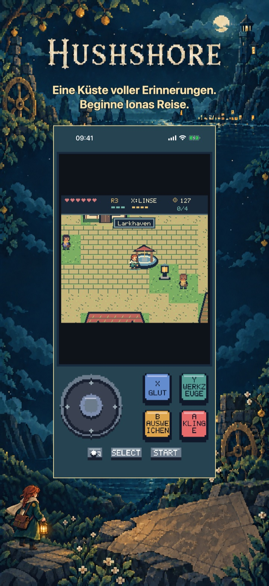
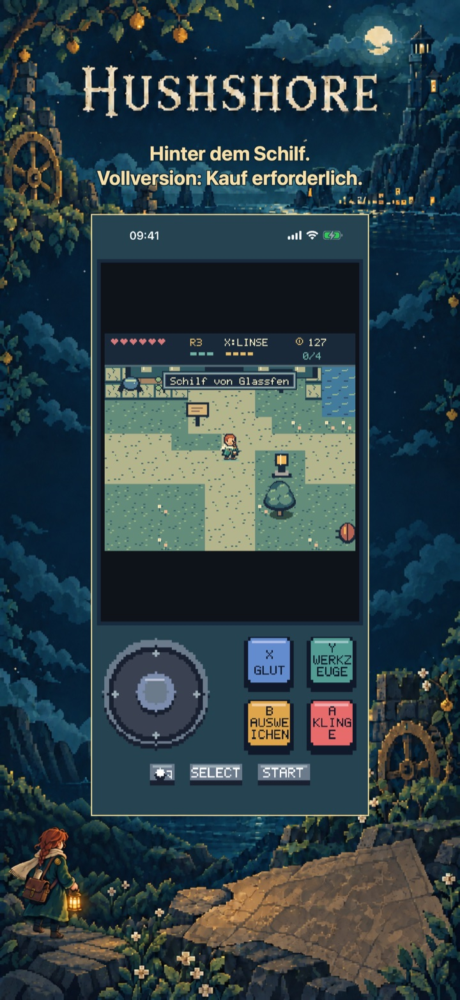
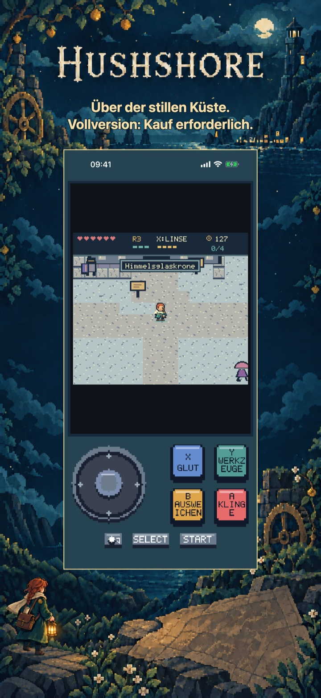
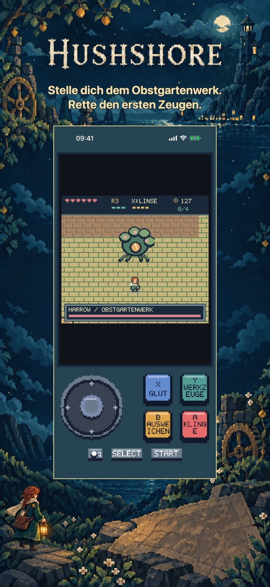
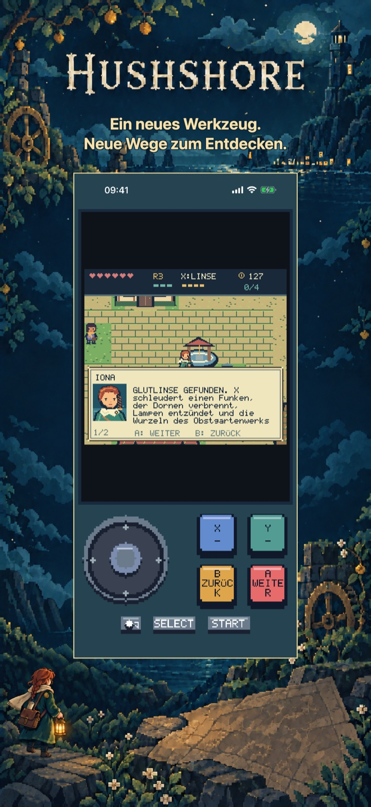
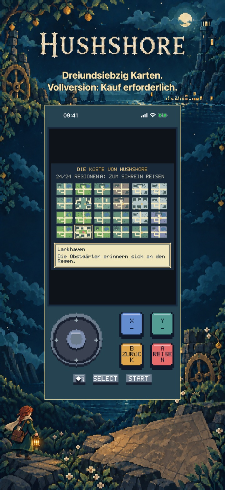

Hushshore: Erinnerungsküste
Hushshore: Erinnerungsküste
Folge Iona Vale an eine Küste, die Erinnerungen gegen Sicherheit tauscht. Erkunde 73 Karten und begegne fünf Wächtern. Der ganze erste Dungeon ist gratis.
Demnächst im App Store
Erkunde die Anfangsküste, Larkhaven und Morrowmarket, die Zerbrochene Mühle und das gesamte Verwurzelte Aquädukt. Besiege das Obstgartenwerk, rette den ersten Zeugen und erkunde die Demoküste weiterhin kostenlos.

Pixelabenteuer
Eine eigene Reise für dieses Spiel
Alle 73 Karten sind fest gestaltet: 24 Außenregionen, 18 Innenräume, 25 Dungeonräume und sechs Höhlen. Fünf Wächter, acht Gemeinschaftsaufgaben und zwei Enden gehören zur Reise. Entdeckungen, Ausrüstung, Geschichte und Einstellungen werden lokal gespeichert.
Beginne mit dem kostenlosen Einstieg
Erkunde die Anfangsküste, Larkhaven und Morrowmarket, die Zerbrochene Mühle und das gesamte Verwurzelte Aquädukt. Besiege das Obstgartenwerk, rette den ersten Zeugen und erkunde die Demoküste weiterhin kostenlos.
Schalte die gesamte Küste mit 73 Karten, alle fünf Hüter, alle vier Fortbewegungswerkzeuge, die übrigen Quests und beide Enden frei. Alle Entdeckungen der Anfangsreise bleiben erhalten.
Einmalkauf · Keine Werbung · Kein Abo
Hushshore: Erinnerungsküste
Erkunde, erinnere und rette
Finde die verlorene Erinnerung deines Bruders an einer Küste, die Sicherheit mit Vergessen bezahlt.
Iona Vale erkundet ein Action-Rollenspiel in Pixelgrafik aus der Vogelperspektive. Dörfer, Höhlen und gestaltete Dungeons bieten Kämpfe, Umgebungsrätsel und vier Werkzeuge für neue Wege. Gemeinschaftsaufgaben verbinden die Menschen mit der Geschichte der Küste.
Alle 73 Karten sind fest gestaltet: 24 Außenregionen, 18 Innenräume, 25 Dungeonräume und sechs Höhlen. Fünf Wächter, acht Gemeinschaftsaufgaben und zwei Enden gehören zur Reise. Entdeckungen, Ausrüstung, Geschichte und Einstellungen werden lokal gespeichert.
Erkunde die Anfangsküste, Larkhaven und Morrowmarket, die Zerbrochene Mühle und das gesamte Verwurzelte Aquädukt. Besiege das Obstgartenwerk, rette den ersten Zeugen und erkunde die Demoküste weiterhin kostenlos.
Schalte die gesamte Küste mit 73 Karten, alle fünf Hüter, alle vier Fortbewegungswerkzeuge, die übrigen Quests und beide Enden frei. Alle Entdeckungen der Anfangsreise bleiben erhalten.
Keine Werbung, Konten, Analyse oder Abonnements. Ein nicht verbrauchbarer Kauf schaltet das ganze Spiel dauerhaft frei. Apple StoreKit verarbeitet Kauf und Wiederherstellung; der Preis erscheint vor der Bestätigung. Englisch, Spanisch, Französisch, Deutsch und Italienisch sind enthalten. Alle Spielinhalte liegen lokal vor.
Im Spiel
Im Spiel
Sechs native Ansichten zeigen die Spielidee, zwei weitere Welten, tieferes Spiel, Reisebelohnungen und das Titelmenü oder den Atlas.
Beginne Ionas Reise.

Vollversion: Kauf erforderlich.

Vollversion: Kauf erforderlich.

Rette den ersten Zeugen.

Neue Wege zum Entdecken.

Vollversion: Kauf erforderlich.
Spielvideo auf Englisch
Ein 24-sekündiges Spielvideo auf Englisch. Zusätzliche Inhalte erfordern einen einmaligen Vollspielkauf.
Hilfe & Support
Fragen zu Hushshore: Erinnerungsküste?
Hier findest du praktische Antworten zu Steuerung, Spielstand, kostenlosem Einstieg und dem Kauf der Vollversion.
Wie spiele ich?
Wo wird mein Fortschritt gespeichert?
Was kann ich kostenlos spielen?
Was schaltet der Vollversionskauf frei?
Einmalkauf · Keine Werbung · Kein Abo
Wie stelle ich einen Kauf wieder her?
Mein Kauf ist ausstehend oder der Store nicht verfügbar. Was kann ich tun?
Support kontaktieren
Stelle eine Frage oder melde ein Problem. Nenne das Spiel, dein Gerät und was passiert ist.
Kontaktiere uns auf GitHubMeldungen sind öffentlich und erfordern ein GitHub-Konto.